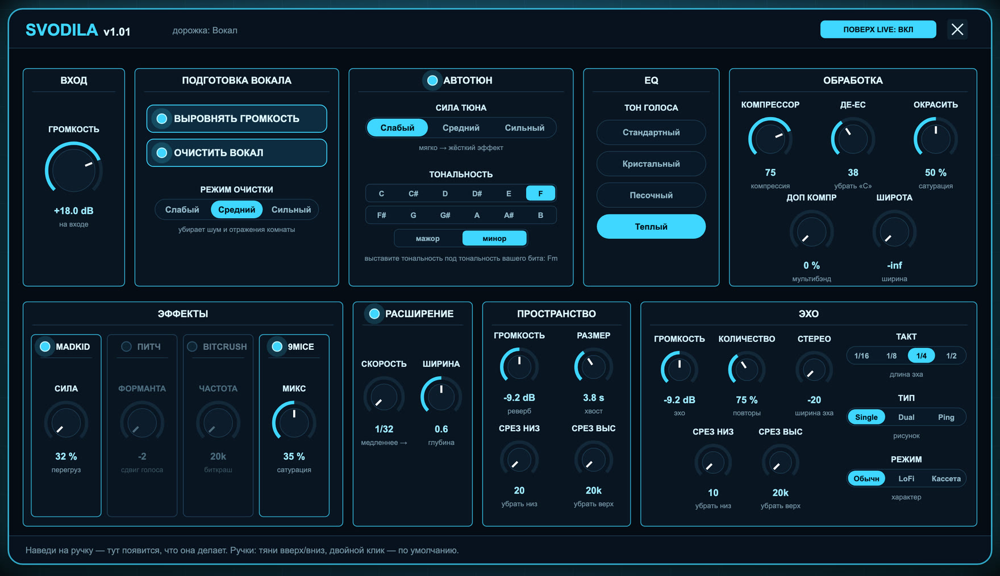

Все треки ниже записаны на мобильный телефон с ужасным качеством и сведены полностью нашим плагином. Без студии, без звукаря, без ручной настройки.

Панель SVODILA v1.01: вся обработка вокала в одном окне. Нажми на панель, чтобы открыть крупно.
Нажми play, а потом переключай ДО / ПОСЛЕ прямо во время звучания: трек продолжит играть с того же места.
В гайде показываю, как записывать на телефон и сводить треки, чтобы они звучали как со студии.
Сделать трек